Last updated on May 27, 2004, at 02:24pm (formatting only).
Please report any broken or missing links to Nick Boldt.
Table of Contents | Table of Figures | Table of Tables
Overview |
top | toc | tof | tot |
The Eclipse Modeling Framework, EMF, is a Java framework and code generation facility for building tools and other applications based on a structured model. EMF provides a mechanism to easily create, save, and restore instances of the classes in your model. This makes it very easy to share data across different applications.
This document describes the basic steps for using EMF, including how to define your model, how to generate and customize your application source code, and how to manipulate and save instance data.
1 Concepts |
top | toc | tof | tot |
We first present some of the key concepts upon which EMF is based. This section is intended to introduce these fundamental concepts at a high level and to give an indication of how they relate to EMF. The concepts that are covered here are:
1.01 Modeling |
top | toc | tof | tot |
A model is an abstract representation of the data used by an application. A model may be expressed simply as an informal description of the data or it may be described precisely using any of a number of formal mechanisms, for example:
A model is constructed from classes that describe objects in an application's domain. Each class may have attributes, associations, and operations associated with it. Usually, the classes in a model are grouped into one or more packages.
1.02 The Ecore Model |
top | toc | tof | tot |
EMF is itself based on a model called Ecore. The Ecore model is the meta-model for all application models that are handled by EMF. (A "meta-model" is a model that represents other models.)
The root of the Ecore Model is EObject. All EMF objects implement the EObject interface.
The classes of the Ecore model include EPackage, EFactory, EClass, and EStructuralFeature. (See Appendix A - The Ecore Model gives a more complete description of the Ecore Model.)
If your model consists of a package that contains two classes, the EMF representation of that model will consist of a single instance each of EPackage and EFactory plus two instances of EClass, along with however many instances of EStructuralFeature are needed to represent the attributes and associations that belong to your classes. When your application creates instances of your classes, each of those instances will implement the EObject interface.
1.03 Code Generation |
top | toc | tof | tot |
Code generation is the process of converting your model into the Java source code for your application. In many cases, after you generate your Java classes you will want to add methods or modify the generated methods. EMF enables you to do this in a such a way that if you later make a change to your model and regenerate, the code generation process will preserve your changes.
EMF provides two separate code generation facilities:
1.04 Basic Code Generation |
top | toc | tof | tot |
The result of EMF basic code generation is two or three Java packages for each package in your model. One of these Java packages consists entirely of Java interfaces that define the APIs to access instances of the classes in your model. The other Java package consists of Java classes that implement those interfaces. The third package, which is optional, contains a generated adapter factory and a generated switch class. These classes are useful when implementing adapters.
The interface package includes one interface for each class in your model. These interfaces extend the EObject interface from the Ecore model. Each interface provides methods that enable you to access an instance of a class and to get and set the values for each of the features of that class.
The interface package also contains two additional interfaces: one that extends the EPackage interface and another that extends the EFactory interface. The EPackage interface provides methods for accessing the meta-data from your model (i.e., the EClass and EStructuralFeature objects that describe your classes) and the factory interface provides methods for creating instances of your data (i.e., the EObject objects that implement your classes.)
The implementation package has Java classes that implement all the interfaces described above.
1.05 Serialization and Loading |
top | toc | tof | tot |
Serialization is the process of writing your instance data into a standardized, persistent form, e.g., a file on your file system or a Web Resource.
Loading (sometimes referred to as "deserialization") is the process of reading the persistent form of the data to recreate instances of EObject in memory. In EMF, loading can be accomplished either through an explicit call to a load API or it can happen automatically whenever a reference to an EObject that has not yet been loaded is encountered.
The APIs that are used in EMF to control the loading and saving of objects are defined on the See Resource. and See ResourceSet. interfaces.
The default implementation of Resource is XMIResourceImpl, which results in
serialization as XMI documents. The See XMIResource.
interface provides additional APIs that enable you to control some
of the behavior of the default serializer and loader. If you wish
to serialize in some format other than the default XMI format, you
can provide your own implementation of Resource.
Resource
A Resource is a collection of EObject objects that are serialized into a single Stream.
The Resource interface is defined in the package org.eclipse.emf.ecore.Resource. It provides APIs that enable you to:
1.06 ResourceSet |
top | toc | tof | tot |
A ResourceSet is a collection of Resource objects that may have cross-references among them.
The ResourceSet interface defines APIs that enable you to:
1.07 URIConverter |
top | toc | tof | tot |
Uniform Resource Identifiers or URIs, as specified in http://www.ietf.org/rfc/rfc2396.txt, are used to uniquely identify resources and objects within resources. For example, when one object references another object that is located in a different Resource, a URI is used to identify the referenced object.
Often it is convenient to have a URI that is expressed as a relative location. For example, if the URI refers to a file on a file system, it may be convenient to describe that file relative to some known location rather than as an absolute path. This would enable your application to run in different environments. Similarly, a URI may refer to a Resource within your Eclipse workbench, or to an object on the Web. Expressing the URI as a relative value rather than an absolute location provides the flexibility that is needed to be able to share resources.
A URIConverter is used to resolve a relative URI into an absolute InputStream or OutputStream. The URIConverter also provides an API to normalize relative URIs. Normalization is used to determine if two different URIs in fact refer to the same underlying object.
EMF provides a default implementation of a URIConverter and also enables you to create and register your own implementation.
1.08 XMI |
top | toc | tof | tot |
The XML Metadata Interchange (XMI) is the default serialization
format used by EMF. This format is based on the XMI 2.0
specification from the OMG. This specification may be found at http://cgi.omg.org/cgi-bin/doc?ad/01-06-12.
The XML specification may be found at http://www.w3.org/TR/REC-xml.
| 1.09 XMIResource | top | toc | tof | tot |
An XMIResource is an extension to the Resource interface (See Resource.) that handles a Resource whose contents are serialized as an XMI document. This is the default type of Resource used by EMF.
The XMIResource interface provides APIs that enable you to:
1.10 Observers and Notifiers |
top | toc | tof | tot |
EMF provides a mechanism for attaching observers (also known as adaptors) to objects (sometimes referred to as notifiers.) The observers are informed of any changes to the notifiers to which they are attached. This allows you to extend the behavior of your EMF objects by implementing observers that provide the extended behavior and attaching those observers to your EMF objects.
2 Tasks |
top | toc | tof | tot |
2.01 Defining Your Model |
top | toc | tof | tot |
The first step in creating an EMF-based application is to define your model. EMF allows you to express your model in a variety of ways.
Whichever form you choose, your model specification will consist of some number of packages, classes, attributes, and associations. Each of these has various properties that you can specify.
Some properties are mandatory, but most have some default settings, so you only need to specify them explicitly if you wish to override the defaults. For example, when you specify an attribute, the attribute name is required but the multiplicity is not. (If you do not specify a multiplicity, single-valued is assumed.)
A complete list of the properties that are applicable to each model element is provided in the section Ecore Properties and Codegen Specifications.
For the examples that appear in the following sections, assume that we wish to create a model that consists of a single package called "enterprise" with classes that represent companies, departments, and employees. This details of this model are illustrate below using UML notation.
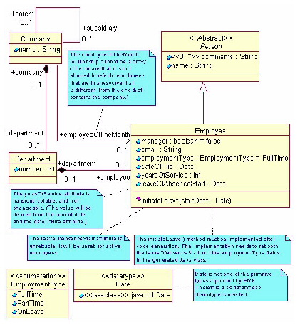
FIGURE 1. UML for enterprise model
You have three choices for how you could specify this model to EMF code generation:
2.02 Code Generation Using Rational Rose |
top | toc | tof | tot |
If you use Rational Rose to define your model, you simply draw a Class Diagram containing Packages, Classes, Attributes, and Associations. An example of a UML diagram depicting a package is shown in Figure 1, UML for enterprise model. In general, the UML elements in your diagram map directly to Ecore elements which determine the precise code generation patterns to be used. Additionally, there are a few special annotations that are used by the EMF basic code generation tool of which you may need to be aware.
These will be discussed in the following sections:
2.03 Basic UML Model Elements |
top | toc | tof | tot |
The basic elements in your UML model are Classes, Attributes and Relationships. For example:
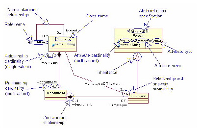
FIGURE 2. Basic Ecore elements in UML diagram
In most cases, the code generation utility will create a Java interface and a Java implementation class for each UML class. Each interface will have accessor methods to get and set each of the attributes and relationships specified in the model. For example, the Company class shown in Figure 2, Basic Ecore elements in UML diagram will generate a Java interface named Company and a Java class named CompanyImpl.
The accessor methods that are created for each attribute and association will vary depending on the properties of the corresponding UML elements.
public interface Company extends EObject{
String getName();
void setName(String value);
EList getDepartment();
Employee getEmployeeOfTheMonth();
void setEmployeeOfTheMonth(Employee value);
Company getParent();
void setParent(Company);
EList getSubsidiary();
} // Company
Note that the "department" relationship on the Company class is
a containment relationship while the "subsidiary" relationship is
non-containment. Both of these relationships are multi-valued,
which means they generated interface has a get method but no set
method. The difference in the containment property leads to
different implementations for the generated get() methods. For
example, the generated CompanyImpl class will include the following
methods:
public EList getDepartment() {
if (department == null) {
department =
new EObjectContainmentWithInverseEList(
Department.class,
this,
EnterprisePackage.COMPANY__DEPARTMENT,
EnterprisePackage.DEPARTMENT__COMPANY);
}
return department;
}
public EList getSubsidiary() {
if (subsidiary == null) {
subsidiary =
new EObjectWithInverseResolvingEList(
Company.class,
this,
EnterprisePackage.COMPANY__SUBSIDIARY,
EnterprisePackage.COMPANY__PARENT);
}
return subsidiary;
}
The Employee class inherits from the Person class. Therefore, the
first line of the interface for Employee will start with:
public interface Employee extends Person
2.04 Specification of Abstract Classes |
top | toc | tof | tot |
Note that the Person class is marked with the <<Abstract>> stereotype. This stereotype is only used in the UML for informational purposes to indicate that the Abstract property is set for this class. This property is set via the Detail page of the Specification dialog for the cass. For example:
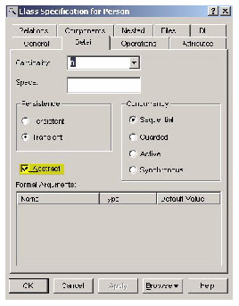
FIGURE 3. Specification Dialog for the Person Class
2.05 Attribute Specifications in UML |
top | toc | tof | tot |
The are some special conventions used by EMF to define the types of certain attributes. Consider the following segment of the enterprise package:
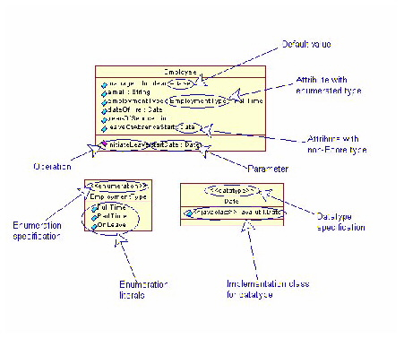
FIGURE 4. Enumerations, DataTypes, and Default
Values
Date getDateOfHire(); void setDateOfHire(Date value); EmploymentType getEmploymentType(); void setEmploymentType(EmploymentType value); void initiateLeave(Date startDate);The EmploymentType interface is generated as follows:
public final class EmploymentType extends AbstractEnumerator
{
public static final int FULL_TIME = 0;
public static final int PART_TIME = 1;
public static final int ON_LEAVE = 2;
public static final EmploymentType FULL_TIME_LITERAL =
new EmploymentType(FULL_TIME, "FullTime");
public static final EmploymentType PART_TIME_LITERAL =
new EmploymentType(PART_TIME, "PartTime");
public static final EmploymentType ON_LEAVE_LITERAL =
new EmploymentType(ON_LEAVE, "OnLeave");
public static final List VALUES =
Collections.unmodifiableList(Arrays.asList(VALUES_ARRAY));
public static EmploymentType get(String name)
{...}
public static EmploymentType get(int value)
{...}
private EmploymentType(int value, String name)
{
super(value, name);
}
} //EmploymentType
2.06 The eCore Properties Page |
top | toc | tof | tot |
In some cases there are properties that are required for code generation that cannot be expressed in standard UML. For these cases, EMF provides a special Rose properties file called ecore.pty. These properties are not shown explicitly in the example in Figure 1, although annotations are used in the diagram to indicate that the properties have been defined.
Before you can use these properties, you must first add the appropriate model properties file to your Rose model. This file is the ecore.pty file that is shipped in the org.eclipse.emf.ecore plugin in the src\models directory.
The mechanism for adding these properties to your model is shown in Figure 5, Adding a Properties File to Your Model and Figure 6, Selecting the eCore.pty file.
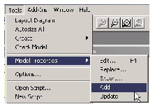
FIGURE 5. Adding a Properties File to Your Model
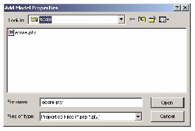
FIGURE 6. Selecting the eCore.pty file
2.07 Ecore Properties for Attributes |
top | toc | tof | tot |
The following figure illustrates the eCore Properties page for Attributes:
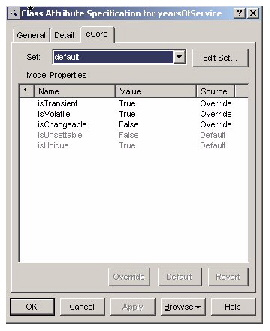
FIGURE 7. Properties page for the yearsOfService
attribute
In the case of the yearsOfService attribute shown here, the intention is to implement the attribute to be derived from the dateOfHire attribute and from current date when the application is run. The settings on the ecore properties page instruct code generation to omit the default implementation of the get method from the implementation class ( isVolatile=True ), to omit the set method altogether from the interface ( isChangeable=False ), and to mark the attribute as transient so it will not be serialized ( isTransient=True.)
2.08 Ecore Properties for Relationships |
top | toc | tof | tot |
The following figure shows the specification dialog for the employeeOfTheMonth association. It is opened to the eCore A page, which displays that Ecore attributes that apply to the employeeOfTheMonth role of the association.
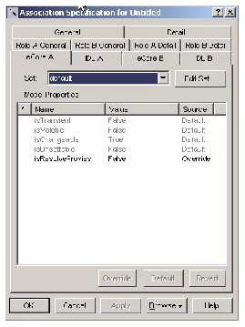
FIGURE 8. Properties page for the employeeOfTheMonth
association
In the case of the employeeOfTheMonth relationship shown here, the intention is that the indicated employee must be one of the employees that contained in the company. Therefore, it will not be necessary to allow for the possibility that the target of this relationship is in a different XMI document from the source. Setting the isResolveProxies property to False suppresses the generated code that would attempt to resolve proxies when accessing this relationship, which makes the accessor method more efficient than it would otherwise be.
2.09 Ecore Properties for Packages |
top | toc | tof | tot |
The following figure illustrate the eCore page of the Specification dialog for Packages.
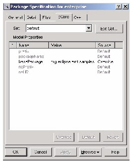
FIGURE 9. Ecore Properties Page for the Package
In this example, there is no prefix. There is also no packageName, so the default name will be the name of the package, which is "enterprise". The basePackage is org.eclipse.emf.samples. Therefore the fully qualified name of the generated package interface will be org.eclipse.emf.samples.enterprise.EnterprisePackage.java.
2.10 Specifying Multiple Inheritance in UML |
top | toc | tof | tot |
EMF supports multiple inheritance of interfaces in much the same way that multiple inheritance is supported in Java. You can define a class in UML that inherits from more than one superclass. The code that is generated for this class will include an interface that extends all the interfaces corresponding to the specified superclasses, but the implementation class will only extend one of the implementation classes.
This means that a generated class may not define all the methods that it is required to implement based on the interfaces that the class supports. You will need to make sure that an implementation is provided for any method that is missing.
You can specify which superclass is the primary superclass in your UML by attaching a stereotype to the generalization relationship that appears in your model. A stereotype of <<extends>> indicates the primary superclass and a stereotype of <<mixin>> indicates some other superclass. For a given subclass, there can only be one generalization that carries the <<extends>> stereotype.
For example:
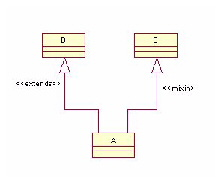
FIGURE 10. UML for Multiple Inheritance
public interface A extends B, C
while the generated implementation class, AImpl, will begin with:
public class AImpl extends BImpl implements A
2.11 Code Generation Using XMI documents |
top | toc | tof | tot |
You can also write XMI documents that can fully specify your model. There are two different types of XMI documents that are needed to specify a model:
The following sections illustrate the contents of the genmodel and ecore documents that are used to specify the enterprise model show in Figure 1, UML for enterprise model. (Note that for this example, the model consists of only a single package, hence there is only one ecore document. If the model were to include multiple root packages, there would be one ecore document for each package.)
The enterprise.genmodel document is shown in Genmodel Document for the enterprise Model. See Genmodel Document for the enterprise Model.
The main elements of the enterprise.ecore document are shown in the following sections. (Note that these elements are, in fact, all part of a single document. They are separated into the various sections below to help direct your attention to the salient features of each element.)
2.12 Genmodel Document for the enterprise Model |
top | toc | tof | tot |
The genmodel document is the document that ties together all the packages, classes, and features in a model and provides any additional information that is not in the model but that is needed by the code generation utility to produce the appropriate source code.
<?xml version="1.0" encoding="ASCII"?>
<genmodel:GenModel xmi:version="2.0" xmlns:xmi="http://www.omg.org/XMI"
xmlns:ecore="http://www.eclipse.org/emf/2002/Ecore"
xmlns:genmodel="http://www.eclipse.org/emf/2002/GenModel"
modelDirectory="/org.eclipse.emf.samples/src"
editDirectory="/org.eclipse.emf.samples.edit/src"
editorDirectory="/org.eclipse.emf.samples.editor/src"
modelPluginID="org.eclipse.emf.samples.enterprise">
<foreignModel>C:\emf\eclipse\plugins\org.eclipse.emf.samples\
src\model\enterprise.mdl</foreignModel>
<genPackages prefix="Enterprise" basePackage="org.eclipse.emf.samples"
ecorePackage="enterprise.ecore#/">
<genEnums ecoreEnum="enterprise.ecore#//EmploymentType">
<genEnumLiterals
ecoreEnumLiteral="enterprise.ecore#//EmploymentType/FullTime"/>
<genEnumLiterals
ecoreEnumLiteral="enterprise.ecore#//EmploymentType/PartTime"/>
<genEnumLiterals
ecoreEnumLiteral="enterprise.ecore#//EmploymentType/OnLeave"/>
</genEnums>
<genDataTypes ecoreDataType="enterprise.ecore#//Date"/>
<genClasses ecoreClass="enterprise.ecore#//Department">
<genFeatures ecoreFeature="ecore:EAttribute
enterprise.ecore#//Department/number"/>
<genFeatures ecoreFeature="ecore:EReference
enterprise.ecore#//Department/company"/>
<genFeatures ecoreFeature="ecore:EReference
enterprise.ecore#//Department/employee"/>
</genClasses>
<genClasses ecoreClass="enterprise.ecore#//Company">
<genFeatures ecoreFeature="ecore:EAttribute
enterprise.ecore#//Company/name"/>
<genFeatures ecoreFeature="ecore:EReference
enterprise.ecore#//Company/department"/>
<genFeatures ecoreFeature="ecore:EReference
enterprise.ecore#//Company/parent"/>
<genFeatures ecoreFeature="ecore:EReference
enterprise.ecore#//Company/subsidiary"/>
<genFeatures ecoreFeature="ecore:EReference
enterprise.ecore#//Company/employeeOfTheMonth"/>
</genClasses>
<genClasses ecoreClass="enterprise.ecore#//Person">
<genFeatures ecoreFeature="ecore:EAttribute
enterprise.ecore#//Person/comments"/>
<genFeatures ecoreFeature="ecore:EAttribute
enterprise.ecore#//Person/name"/>
</genClasses>
<genClasses ecoreClass="enterprise.ecore#//Employee">
<genFeatures ecoreFeature="ecore:EAttribute
enterprise.ecore#//Employee/manager"/>
<genFeatures ecoreFeature="ecore:EAttribute
enterprise.ecore#//Employee/email"/>
<genFeatures ecoreFeature="ecore:EAttribute
enterprise.ecore#//Employee/employmentType"/>
<genFeatures ecoreFeature="ecore:EAttribute
enterprise.ecore#//Employee/dateOfHire"/>
<genFeatures ecoreFeature="ecore:EAttribute
enterprise.ecore#//Employee/yearsOfService"/>
<genFeatures ecoreFeature="ecore:EAttribute
enterprise.ecore#//Employee/leaveOfAbsenceStart"/>
<genFeatures ecoreFeature="ecore:EReference
enterprise.ecore#//Employee/department"/>
<genOperations
ecoreOperation="enterprise.ecore#//Employee/initiateLeave">
<genParameters
ecoreParameter="enterprise.ecore#//Employee/initiateLeave/startDate"/>
</genOperations>
</genClasses>
</genPackages>
</genmodel:GenModel>
Note that most of the elements of this document consist entirely of
references into the enterprise.ecore document, which is described
in the following sections.
The elements in this document that may contain additional information are the genmodel:GenModel element and the genPackages element.
2.13 The Enterprise Package Element in the Ecore Document |
top | toc | tof | tot |
A package is specified as an ecore:EPackage element in an ecore document.
<?xml version="1.0" encoding="ASCII"?>
<ecore:EPackage xmi:version="2.0"
xmlns:xmi="http://www.omg.org/XMI"
xmlns:xsi="http://www.w3.org/2001/XMLSchema-instance"
xmlns:ecore="http://www.eclipse.org/emf/2002/Ecore" name="enterprise"
nsURI="http:///enterprise.xmi" nsPrefix="enterprise">
<EClassifiers... >
..
</EClassifiers>
</ecore:EPackage>
In this case we are defining a package whose name is "enterprise".
The details for the EClassifiers that
comprise this package are illustrated in the following
sections.
2.14 The Company Class Element in the Ecore Document |
top | toc | tof | tot |
A class is specified as an ecore:EClass element in an XMI document. For example, the XMI that defines the Company class from the Enterprise model is:
<EClassifiers xsi:type="ecore:EClass"
name="Company">
<eReferences name="department" eType="#//Department" upperBound="-1"
containment="true" eOpposite="#//Department/company"/>
<eReferences name="employeeOfTheMonth" eType="#//Employee"
resolveProxies="false"/>
<eReferences name="parent" eType="#//Company"
eOpposite="#//Company/subsidiary"/>
<eReferences name="subsidiary" eType="#//Company" upperBound="-1"
eOpposite="#//Company/parent"/>
<eAttributes name="name"
eType="ecore:EDataType http://www.eclipse.org/emf/2002/Ecore#//EString"/>
</EClassifiers>
Note the following:
2.15 The Department Class Element in the Ecore Document |
top | toc | tof | tot |
The XMI that defines the Department class from the Enterprise model is:
<EClassifiers xsi:type="ecore:EClass"
name="Department">
<eReferences name="company" eType="#//Company" transient="true"
eOpposite="#//Company/department"/>
<eReferences name="employee" eType="#//Employee" upperBound="-1"
containment="true" eOpposite="#//Employee/department"/>
<eAttributes name="number"
eType="ecore:EDataType http://www.eclipse.org/emf/2002/Ecore#//EInt"/>
</EClassifiers>
2.16 The Person Class Element in the Ecore Document |
top | toc | tof | tot |
An abstract class is specified as an ecore:EClass element in an XMI document where the abstract attribute is set to "true". For example, the XMI that defines the Person class from the Enterprise model is
<EClassifiers xsi:type="ecore:EClass"
name="Person" abstract="true">
<eAttributes name="comments"
eType="ecore:EDataType http://www.eclipse.org/emf/2002/Ecore#//EString"
upperBound="-1"/>
<eAttributes name="name"
eType="ecore:EDataType http://www.eclipse.org/emf/2002/Ecore#//EString"/>
</EClassifiers>
Note the following:
2.17 The Employee Class Element in the Ecore Document |
top | toc | tof | tot |
The XMI that defines the Employee class from the Enterprise model is:
<EClassifiers xsi:type="ecore:EClass"
name="Employee" eSuperTypes="#//Person">
<eOperations name="initiateLeave">
<eParameters name="startDate" eType="#//Date"/>
</eOperations>
<eReferences name="department" eType="#//Department" transient="true"
eOpposite="#//Department/employee"/>
<eAttributes name="manager"
eType="ecore:EDataType http://www.eclipse.org/emf/2002/Ecore#//EBoolean"
defaultValueLiteral="false"/>
<eAttributes name="email"
eType="ecore:EDataType http://www.eclipse.org/emf/2002/Ecore#//EString"/>
<eAttributes name="employmentType"
eType="#//EmploymentType" defaultValueLiteral="FullTime"/>
<eAttributes name="dateOfHire" eType="#//Date"/>
<eAttributes name="yearsOfService"
eType="ecore:EDataType http://www.eclipse.org/emf/2002/Ecore#//EInt"
changeable="false" volatile="true" transient="true"/>
<eAttributes name="leaveOfAbsenceStart" eType="#//Date" unsettable="true"/>
</EClassifiers>
Note the following:
| 2.18 The EmploymentType Enumeration Element in the Ecore Document |
top | toc | tof | tot |
An enumeration is specified as an ecore:EEnum element in an XMI document. For example, the XMI that defines the EmploymentType enumeration from the Enterprise model is:
<EClassifiers xsi:type="ecore:EEnum" name="EmploymentType"> <eLiterals name="FullTime"/> <eLiterals name="PartTime" value="1"/> <eLiterals name="OnLeave" value="2"/> </EClassifiers>Note the following:
2.19 The Date Datatype Element in the Ecore Document |
top | toc | tof | tot |
A datatype is specified as an ecore:EDataType element in an XMI document. For example, the XMI that defines the Date datatype from the Enterprise model is:
<EClassifiers xsi:type="ecore:EDataType"
name="Date" instanceClassName="java.util.Date"/>
Note the following:
2.20 Code Generation Using Annotated Java Interfaces |
top | toc | tof | tot |
If you prefer to use Java interfaces to specify your model, all you need to do is to write a Java interface declaration to represent each class in your model and a Java class declaration to define each enumeration in your model.
Within each interface you will need to specify a get() method for each attribute or relationship in the model and within each class you will need to specify a field to represent each enumeration literal.
Each of these interface statements, class statements, get() methods, and fields should be preceded by a javadoc comment that includes a @model tag. This tag is used to tell the code generation utility that the construct represents an element of your model.
The code generation utility will automatically expand your interface declarations to include any other methods that are needed to represent and access the classes in your model. All the necessary implementation classes will also be generated automatically.
Much of the information that is needed to generate code can be gleaned from the Java interface specification. For example, the name of the package that a class belongs to is derived from the package statement that appears in the corresponding interface declaration. Also, the names of all attributes are derived by stripping off the prefix "get" from the method names. For single-valued attributes and references, the type is the return type of the get() method. Multi-valued attributes and references are identified by methods that have a return type of List or EList.
Ecore properties that cannot be derived from the Java source code can be expressed via the @model tags. Each property is specified in the form:
/**
@model [<property>=<value>...]
*/
A full list of the possible properties can be found in See Ecore Properties and Codegen
Specifications.
Examples of the @model tags that are needed to specify the enterprise model illustrated in Figure 1, UML for enterprise model can be found in the following sections:
See Java Specification for the Enterprise Package.
See Java Specification for the Company Class.
See Java Specification for the Department Class.
See Java Specification for the Person Class.
See Java Specification for the Employee Class.
See Java Specification for the EmploymentType Enumeration.
2.21 Java Specification for the Enterprise Package |
top | toc | tof | tot |
In certain cases, it may be useful to provide a interface to define a package. Note that usually, this declaration is not required at all. The classes and enumerations that belong to the package in your model are automatically identified based on the interface and class declarations that are in a java package. The datatypes that belong to your package are identified by attributes and methods that use types that are not classes in your model.
The only situation where it may be necessary to provide the declaration shown here is when you wish to override some the default settings for the package or when you wish to define a datatype that is not actually referenced in your model.
package org.eclipse.emf.samples.enterprise;
public interface EnterprisePackage extends EPackage{
String eNAME = "enterprise";
String eNS_URI = "enterprise.xmi";
String eNS_PREFIX = "enterprise";
/**
@model instanceClass="java.util.Date"
*/
EDataType getDate();
} //EnterprisePackage
Note the following:
2.22 Java Specification for the Company Class |
top | toc | tof | tot |
A class in your model is specified as a Java interface. The name of the class is the name of the interface. The attributes and references in the class are represented by get() methods in your interface that are preceded by a @model tag.
For example, the Java interface that defines the Company class from the Enterprise model is:
package org.eclipse.emf.samples.enterprise;
import org.eclipse.emf.common.util.EList;
import org.eclipse.emf.ecore.EObject;
/**
@model
*/
public interface Company extends EObject{
/**
@model
*/
String getName();
/**
@model type="Department" opposite="company" containment="true"
*/
EList getDepartment();
/**
@model resolveProxies="false"
*/
Employee getEmployeeOfTheMonth();
/**
@model opposite="subsidiary"
*/
Company getParent();
/**
@model type="Company" opposite="parent"
*/
EList getSubsidiary();
} // Company
Note the following:
2.23 Java Specification for the Department Class |
top | toc | tof | tot |
The Java interface that defines the Department class from the Enterprise model is:
package org.eclipse.emf.samples.enterprise;
import org.eclipse.emf.common.util.EList;
import org.eclipse.emf.ecore.EObject;
/**
@model
*/
public interface Department extends EObject{
/**
@model
*/
int getNumber();
/**
@model opposite="department"
*/
Company getCompany();
/**
@model type="Employee" opposite="department" containment="true"
*/
EList getEmployee();
} // Department
2.24 Java Specification for the Person Class |
top | toc | tof | tot |
The Java interface that defines the Person class from the Enterprise model is:
package org.eclipse.emf.samples.enterprise;
import org.eclipse.emf.common.util.EList;
import org.eclipse.emf.ecore.EObject;
/**
@model abstract="true"
*/
public interface Person extends EObject{
/**
@model type="String"
*/
EList getComments();
/**
@model
*/
String getName();
} // Person
Note the following:
2.25 Java Specification for the Employee Class |
top | toc | tof | tot |
The Java interface that defines the Employee class from the Enterprise model is:
package org.eclipse.emf.samples.enterprise;
/**
@model
*/
public interface Employee extends Person{
/**
@model default="false"
*/
boolean isManager();
/**
@model
*/
String getEmail();
/**
@model default="FullTime"
*/
EmploymentType getEmploymentType();
/**
@model dataType="enterprise.Date"
*/
Date getDateOfHire();
/**
@model transient="true" changable="false" volatile="true"
*/
int getYearsOfService();
/**
@model unsettable="true" dataType="enterprise.Date"
*/
Date getLeaveOfAbsenceStart();
/**
@model opposite="employee"
*/
Department getDepartment();
/**
@model parameters="org.eclipse.emf.samples.enterprise.Date"
*/
void initiateLeave(Date startDate);
} // Employee
Note the following:
2.26 Java Specification for the EmploymentType Enumeration |
top | toc | tof | tot |
An enumeration in your model is specified as a public final class that extends org.eclipse.emf.common.util.AbstractEnumerator. You need to identify the names and values of the enumeration literals and EMF code generation will automatically fill in the implementation details. For example, the Java class that defines the EmploymentType enumeration from the Enterprise model is:
package org.eclipse.emf.samples.enterprise;
import org.eclipse.emf.common.util.AbstractEnumerator;
/**
@model
*/
public final class EmploymentType extends AbstractEnumerator
{
/**
@model name="FullTime"
*/
public static final int FULL_TIME = 0;
/**
@model name="PartTime"
*/
public static final int PART_TIME = 1;
/**
@model name="OnLeave"
*/
public static final int ON_LEAVE = 2;
private EmploymentType( int value, String name)
{
super (value, name);
}
} //EmploymentType
Note the following:
2.27 Generating your model |
top | toc | tof | tot |
The steps for invoking the EMF code generation utility are
described in the document called "Tutorial: Generating an EMF
Model", which can be found in the "Documents" section of the EMF
web site. Please see http://www.eclipse.org/emf/
for details.
Configuring your EMF Runtime Environment
There is some setup that may be needed before you can start working with EMF objects.
In some cases there are three alternative mechanisms you can use to do the necessary setup. The choice of which mechanism to use will depend on whether or not your application runs from within the Eclipse workbench and whether the applicable configuration option applies globally or locally.
If your application runs as a plugin within the workbench, you can use your plugin.xml file to specify many of the configuration options you need. Otherwise, you will need to invoke APIs that initialize and register the prerequisite objects. The specific API that you need to use will depend on whether the customization is meant to apply globally or locally.
The following sections list the setup actions that you may need to take. Where appropriate, each section describes the alternative setup mechanisms for specifying each customization.
| 2.28 Registering/Initializing a Package | top | toc | tof | tot |
For generated packages, before you can access the classes of a package, you need to ensure that the package has been registered and initialized. If you are running within the EMF workbench, you can See Registering and Initializing a Generated Package in a Plugin. register packages through the plugin.xml file. (See Registering and Initializing a Generated Package in a Plugin.)
Otherwise, you need to explicitly invoke a method that will initialize the package. (See Registering and Initializing a Generated Package Using APIs.)
For dynamic packages, i.e., packages that are created by your application at runtime, your application is responsible for the initialization and registration of the package. (See Registering a Dynamic Package.)
2.29 Registering and Initializing a Generated Package in a Plugin |
top | toc | tof | tot |
To preregister a package or packages, you would include the org.eclipse.emf.ecore.generated_package extension point in your plugin.xml file. For example, assume that you generated the Enterprise package into a Java package called "org.eclipse.emf.samples.enterpise". Your plugin may contain the following extension point element:
<extension point="org.eclipse.emf.ecore.generated_package"> <package uri = "enterpise.xmi" class = "org.eclipse.emf.samples.enterpise.EnterprisePackage"/> </extension>
2.30 Registering and Initializing a Generated Package Using APIs |
top | toc | tof | tot |
If you are running outside of the workbench, you will need to explicitly initialize each package that you require. You do this by invoking the static init() method that is defined on each package implementation. For example, a method to initialize the EnterprisePackage would look like this:
protected void initializeEnterprisePackage() {
EnterprisePackageImpl.init();
}
2.31 Registering a Dynamic Package |
top | toc | tof | tot |
If you have a dynamic package (i.e., a package that is created by your application at runtime rather than being generated) you will need to ensure that your package is correctly registered.
After you create your package you must ensure that it is registered. One way to do this is using the following method:
public static void registerDynamicPackage(String uri, EPackage pkg)
{
EPackage.Registry.INSTANCE.put(uri, pkg);
}
Where:
2.32 Accessing the Package and Factory classes |
top | toc | tof | tot |
If you need to access the meta data for your package, you will need to acquire a reference to the generated Package class. Similarly, if you need to create instances of the classes in your model, you will need to do so using the generated Factory class. If you access these objects frequently, you may find it convenient to cache the references to them. For example, a method to look up and cache the EnterprisePackage and enterpriseFactory might look like this:
EnterprisePackage EnterprisePackage=null;
enterpriseFactory enterpriseFactory=null;
protected void lookupPackageAndFactory() {
Map registry = EPackage.Registry.INSTANCE;
String enterpiseURI = EnterprisePackage.eNS_URI;
EnterprisePackage = (EnterprisePackage)registry.get(enterpiseURI);
enterpriseFactory = EnterprisePackage.getenterpriseFactory();
}
| 2.33 Creating a Resource | top | toc | tof | tot |
A Resource should be created through either a Resource.Factory or a ResourceSet. (Actually, the createResource() method on the ResourceSet class is implemented using Resource.Factory, so ultimately, every Resource object is created through a Resouce.Factory.)
Resource objects may also be created automatically. If you reference an object that is defined in a Resource that has not yet been loaded, the Resource will be automatically loaded.
For example, to create a Resource from a ResourceSet, you could use the following method.
public static Resource createResourceFromResourceSet(ResourceSet resSet,
String uri)
{
Resource r = null;
r = resSet.createResource(URI.createURI(uri));
return r;
}
Where:
public static Resource createResourceFromDefaultFactory(String uri)
{
Resource r = null;
Resource.Factory resFactory =
Resource.Factory.Registry.INSTANCE.getFactory(
URI.createURI(uri));
r = resFactory.createResource(URI.createURI(uri));
return r;
}
Where:
| 2.34 Creating a ResourceSet | top | toc | tof | tot |
You can create a ResourceSet simply by invoking new on an implementation of the ResourceSet interface. The default implementation is in org.eclipse.emf.ecore.Resource.impl.
The createResourceSet() method defined below provides the convenience of being able to initialize the ResourceSet with a specified Resource.Factory.Registry or URIConverter. If these are needed but do not exist at the time the ResourceSet is created, they can be added later.
public static ResourceSet createResourceSet(Resource.Factory.Registry r,
URIConverter c) {
ResourceSet resSet = new ResourceSetImpl();
if (c!=null) resSet.setURIConverter(c);
if (r!=null) resSet.setResourceFactoryRegistry(r);
return resSet;
}
Where:
| 2.35 Registering a Resource.Factory | top | toc | tof | tot |
You have the option of substituting your own implementation of the Resource interface for the default implementation provided by EMF. This enables you to control the format used to serialize your data.
In order to specify which implementation of Resource to use, you need to register a Resource.Factory that can create an instance of the desired Resource. The default Resource.Factory used to create XMI streams is org.eclipse.emf.ecore.xmi.XMIResourceFactoryImpl.
You can register a Resource.Factory by either protocol or file extension. Once a Resource.Factory is registered, anytime a Resource is generated, if the URI matches one of the registered protocols or extensions, the specified Resource.Factory will be used. As a special case, "*" can be used as a wild card to register an extension Resource.Factory as applying to all extensions. (Protocols take precedence, so if a URI matches both a registered protocol and a registered extension, the protocol will be used. Specific extensions take precedence over the wild card.)
The Resource.Factory that you register can be any type that implements the org.eclipse.emf.ecore.resource.Resource.Factory interface. So, for example, if you want to save your documents in a format other than XMI, you would implement a Resource that loads and saves the format you choose and then you would implement and register a Resource.Factory that creates an instance of your Resource implementation.
| 2.36 Registering a Resource.Factory for a Plugin | top | toc | tof | tot |
You can use the plugin extension points "org.eclipse.emf.ecore.extension_parser" and "org.eclipse.emf.ecore.protocol_parser" to register an implementation of a Resource.Factory. (The term "parser" is used here because the specified Resource.Factory determines which type of Resource is used which in turn determines how an InputStream will be parsed.)
For example, if you have defined an implementation of Resource.Factory called org.eclipse.dtd.impl.DTDResourceFactoryImpl which creates a Resource that can be used to parse and serialize DTD files, and you want this to apply to any file that has an extension of ".dtd", you could do the following:
<extension point = "org.eclipse.emf.ecore.extension_parser"> <parser type="dtd" class="org.eclipse.dtd.impl.DTDResourceFactoryImpl"/> </extension>On the other hand, if you want your DTDResource implementation to be used for any URI that has a protocol of "abc", you could do the following:
<extension point = "org.eclipse.emf.ecore.protocol_parser"> <parser protocolName="abc" class="org.eclipse.dtd.impl.DTDResourceFactoryImpl"/> </extension>
| 2.37 Registering a Resource.Factory Globally | top | toc | tof | tot |
The following method registers a ResourceFactory in the global Resource.Factory.Registry under a specified key.
public static void registerGlobalResourceFactory(Resource.Factory f,
String key, boolean isExtension)
{
Resource.Factory.Registry reg = Resource.Factory.Registry.INSTANCE;
Map m;
if (isExtension) m=reg.getExtensionToFactoryMap();
else m=reg.getProtocolToFactoryMap();
m.put(key, f);
}
Where:
The following method registers a ResourceFactory in the local Resource.Factory.Registry for a given ResourceSet under a specified key.
public static void registerLocalResourceFactory(
ResourceSet resSet,
Resource.Factory f,
String key,
boolean isExtension)
{
Resource.Factory.Registry reg = resSet.getResourceFactoryRegistry();
if (reg==null) {
reg = new ResourceFactoryRegistryImpl();
resSet.setResourceFactoryRegistry(reg);
}
Map m;
if (isExtension) m=reg.getExtensionToFactoryMap();
else m=reg.getProtocolToFactoryMap();
m.put(key, f);
}
Where:
| 2.38 Registering a URIConverter | top | toc | tof | tot |
If you need a customized URIConverter you will need to define the implementation, create an instance of the implementation, and then attach it to a ResourceSet. There is no mechanism for registering a URIConverter for a plugin.
public static void setURIConverter(ResourceSet resSet, URIConverter c) {
if (c!=null) resSet.setURIConverter(c);
return;
}
Where:
| 2.39 Registering an AdapterFactory | top | toc | tof | tot |
An AdapterFactory is used to create Adapter objects and associate them with Notifier objects. You need to register one or more AdapterFactory objects with a ResourceSet.
public static void setURIConverter(ResourceSet resSet, AdapterFactory af) {
if (af!=null) resSet.getAdapterFactories().add(af);
return;
}
Where:
2.40 Running your application |
top | toc | tof | tot |
2.41 Creating Instance Data |
top | toc | tof | tot |
The following method illustrate the construction of two resources that contain instances of classes that are defined in the enterprise model.
/**
* createInstances
*
* Creates two resources that contain instances of classes from the
* enterprise package and adds the resources to the specified Resource set.
*
*/
static void createInstances(ResourceSet resSet) {
// Access the factory (needed to create instances)
Map registry = EPackage.Registry.INSTANCE;
String enterpriseURI = EnterprisePackage.eNS_URI;
EnterprisePackage EnterprisePackage =
(EnterprisePackage) registry.get(enterpriseURI);
EnterprisEFactory enterprisEFactory =
EnterprisePackage.getEnterprisEFactory();
// Create the resources
Resource res1 =
resSet.createResource(URI.createURI("megacorp.enterprise"));
Resource res2 =
resSet.createResource(URI.createURI("acme.enterprise"));
// Create the first company and add it to a Resource
Company c1 = enterprisEFactory.createCompany();
c1.setName("Mega Corp");
Department d1 = enterprisEFactory.createDepartment();
d1.setNumber(99);
Employee e1 = enterprisEFactory.createEmployee();
e1.setName("Jane Doe");
c1.getDepartment().add(d1);
d1.getEmployee().add(e1);
res1.getContents().add(c1);
// Create the second company and add it to a Resource
Company c2 = enterprisEFactory.createCompany();
c2.setName("ACME");
Department d2 = enterprisEFactory.createDepartment();
d2.setNumber(101);
Employee e2 = enterprisEFactory.createEmployee();
e2.setName("John Smith");
c2.getDepartment().add(d2);
d2.getEmployee().add(e2);
res2.getContents().add(c2);
c1.getSubsidiary().add(c2);
}
This code performs the following tasks:
Note that the only objects that are added directly to the resources are the instances of the Company class. The other classes are connected to the Company class through containment relationships, and therefore they should not be added to the resources.
The XMI documents that contain the contents of the resources are displayed in the following section (Serializing Your Instance Data).
Serializing Your Instance Data
The following method illustrate how the resources that were constructed in See Creating Instance Data. can be serialized into XMI files.
/**
Creates and initializes the resrouce set and then saves the
resources contained in that Resource set.
*/
public static void createAndSave() {
// Initialize the enterprise package
EnterprisePackageImpl.init();
// Register the XMI Resource factory for the.enterprise extension
Resource.Factory.Registry reg = Resource.Factory.Registry.INSTANCE;
Map m = reg.getExtensionToFactoryMap();
m.put("enterprise", new XMIResourceFactoryImpl());
// Obtain a new Resource set
ResourceSet resSet = new ResourceSetImpl();
// Create resources and instances; add the resources to the Resource set
createInstances(resSet);
// Save each Resource
Iterator r = resSet.getResources().iterator();
while (r.hasNext()) {
Resource res = (Resource) r.next();
Map options = new HashMap();
options.put(XMIResource.OPTION_DECLARE_XML, Boolean.TRUE);
try {
res.save(options);
} catch (IOException e) {
System.out.println(e);
}
}
}
This code performs the following tasks:
The contents of the megacorp.enterprise Resource is:
<?xml version="1.0" encoding="ASCII"?>
<enterprise:Company xmi:version="2.0" xmlns:xmi="http://www.omg.org/XMI"
xmlns:enterprise="enterprise.xmi" name="Mega Corp">
<department number="99">
<employee name="Jane Doe"/>
</department>
<subsidiary href="acme.enterprise#/"/>
</enterprise:Company>
<?xml version="1.0" encoding="ASCII"?>
And the contents of the acme.enterprise Resource is:
<enterprise:Company xmi:version="2.0" xmlns:xmi="http://www.omg.org/XMI"
xmlns:enterprise="enterprise.xmi" name="ACME">
<department number="101">
<employee name="John Smith"/>
</department>
<parent href="megacorp.enterprise#/"/>
</enterprise:Company>
2.42 Loading Instance Data |
top | toc | tof | tot |
The following method illustrates how the XMI files that were generated in the example in See Serializing Your Instance Data. can be loaded back into memory.
/**
* load
*
* loads and prints the contents of a Resource set
*
*/
public static void load() {
// Initialize the enterprise package
EnterprisePackageImpl.init();
// Register the XMI Resource factory for the.enterprise extension
Resource.Factory.Registry reg = Resource.Factory.Registry.INSTANCE;
Map m = reg.getExtensionToFactoryMap();
m.put("enterprise", new XMIResourceFactoryImpl());
// Obtain a new Resource set
ResourceSet resSet=new ResourceSetImpl();
// Load one of the resources into the resoruce set.
Resource res = resSet.getResource(
URI.createURI("megacorp.enterprise"),true);
// Print all the resources inthe Resource set.
// Note: the process of printing the contents of the first Resource
// will cause the second Resource to be demand loaded.
List resList = resSet.getResources();
for (int i=0; i<resList.size(); i++) {
res = (Resource) resList.get(i);
System.out.println("\n-----------------------------------------");
System.out.println("\nContents of Resource "+res.getURI());
System.out.println("\n-----------------------------------------\n");
UGRefPrint.print(res.getContents());
}
}
This code performs the following tasks:
----------------------------------------- Contents of Resource megacorp.enterprise ----------------------------------------- Company: name: Mega Corp department: number: 99 company: name: Mega Corp employee: name: Jane Doe department: number: 99 subsidiary: name: ACME ----------------------------------------- Contents of Resource acme.enterprise ----------------------------------------- Company: name: ACME department: number: 101 company: name: ACME employee: name: John Smith department: number: 101 parent: name: Mega Corp
2.43 Handling notifications |
top | toc | tof | tot |
2.44 Using Reflective APIs |
top | toc | tof | tot |
EMF provides APIs that enable you to access your data
reflectively. This means that you can view and manipulate EMF data
without having any prior knowledge of the model. (See Examining
EObject Instances using
Reflection
and Modifying EObjects using
reflection.) Also, you can dynamically create new classes or extend
classes that have been generated.
| 2.45 Examining EObject Instances using Reflection | top | toc | tof | tot |
The methods described in this section can be used to print out the contents of an EObject without having any prior knowledge of the structure of that EObject. The methods defined here are all static and are assumed to be in the same class.
The only public method in this class is print, which takes a collection of EObject objects and displays the contents of the objects in System.out.
The See print. method invokes See printObject. to display each object in the Collection. The printObject() method prints the name of the object and then displays the contents of the object by invoking See printAllAttributes. and See printAllReferences.
2.46 print |
top | toc | tof | tot |
The print method invokes See printObject. to display each object in the Collection. This can be any Collection that contains EObject objects. For example, it might be the contents of a Resource.
static public void print(Collection list) {
Iterator iter = list.iterator();
while (iter.hasNext()) {
Object object = iter.next();
if (object instanceof EObject)
See printObject. (0, (EObject)object, null, true);
}
}
Where:
2.47 printObject |
top | toc | tof | tot |
The printObject() method can be called either on a root object or it can be called to display the target of a reference. When a root object is printed, the name for the object will be the name of the object's class. When a reference is printed, the name will be the name of the reference.
All the attributes of the object are displayed by calling See printAllAttributes.
The printReferences argument that is passed to See printObject. is a flag to indicate whether or not to display the references that belong to the object. In the case of a root object, the references are always displayed. For a non-root object, the references will be displayed if the object is being printed as part of its container. (This is needed to prevent the possibility of infinite recursion when invoking See printObject. .)
If the printReferences flag is true, the references are displayed by calling printAllReferences().
static private void printObject(
int tabIndex,
EObject EObject,
EReference referenceObj,
boolean printReferences) {
if (tabIndex != 0) {
System.out.println();
for (int i = 0; i < tabIndex; i++)
System.out.print("\t");
}
ENamedElement nameObj =
(referenceObj == null)
? (ENamedElement) EObject.EClass()
: referenceObj;
System.out.println(nameObj.getName() + ": " );
See printAllAttributes. (tabIndex + 1, EObject);
if (printReferences)
See printAllReferences. (tabIndex, EObject);
}
Where:
2.48 printAllAttributes |
top | toc | tof | tot |
The printAllAttributes() method first accesses the meta object for a given object and then accesses and traverses the list of attributes that belong to the meta object. The printAttribute() method is invoked for each attribute to print out the appropriate value, if it exists.
static private void printAllAttributes(int tabIndex, EObject EObject) {
EClass eMetaObject = EObject.EClass();
if (eMetaObject == null)
return;
Collection attrs = eMetaObject.getEAllAttributes();
if (attrs == null)
return;
Iterator iAttr = attrs.iterator();
while (iAttr.hasNext()) {
EAttribute eAttr = (EAttribute) iAttr.next();
See printAttribute. (tabIndex, EObject, eAttr);
}
}
Where:
2.49 printAttribute |
top | toc | tof | tot |
The printAttribute() method displays the value for a single attribute, if it exists. The value of the attribute is obtained by calling the reflective method E Object.eGet(EStructuralFeature). Note that if the attribute is a single-valued attribute, the value will be a single Object. Otherwise it will be a Collection of objects.
static private void printAttribute(
int tabIndex,
EObject EObject,
EAttribute eAttr) {
if (!EObject.eIsSet(eAttr)) {
return;
}
Object value = EObject.eGet(eAttr);
if (eAttr.isVolatile() || (value == null))
return;
String valueS = "";
if (eAttr.isMany()) {
Iterator vals = ((Collection) value).iterator();
while (vals.hasNext()) {
if (valueS.length() > 0)
valueS += ", ";
valueS += vals.next().toString();
}
}
else
valueS = value.toString();
for (int i = 0; i < tabIndex; i++)
System.out.print("\t");
System.out.println(eAttr.getName() + ": " + valueS);
return;
}
Where:
2.50 printAllReferences |
top | toc | tof | tot |
The printAllReferences() method first accesses the meta object for a given object and then accesses and traverses the list of references that belong to the meta object. The printReference() method is invoked for each reference to print out the appropriate object, if it exists.
static private void printAllReferences(int tabIndex, EObject EObject) {
EClass eMetaObject = EObject.EClass();
if (eMetaObject == null)
return;
Collection refs = eMetaObject.getEAllReferences();
if (refs == null)
return;
Iterator iRef = refs.iterator();
while (iRef.hasNext()) {
EReference ref = (EReference) iRef.next();
See printReference. (tabIndex, EObject, ref);
}
}
Where:
2.51 printReference |
top | toc | tof | tot |
The printReference() method displays the value for a single reference, if it exists. The value of the reference is obtained by calling the reflective method EObject.eGet(EStructuralFeature). Note that if the reference is a single-valued reference, the value will be a single Object. Otherwise it will be a Collection of objects.
The target of the reference is printed out by calling printObject() recursively. Note that for containment references, we want to print the contained object plus all of its references while for non-containment references, we only want to print the object. This will prevent the possibility of infinite recursion.
static private void printReference(
int tabIndex,
EObject EObject,
EReference ref) {
Object value = EObject.eGet(ref);
if (ref.isVolatile() || (value == null))
return;
if (ref.isMany()) {
Iterator vals = ((Collection) value).iterator();
while (vals.hasNext()) {
EObject eValue = (EObject)vals.next();
if (eValue==null)
return;
boolean printNestedReferences =
eValue.eContainer() == EObject;
printObject(tabIndex + 1, eValue, ref, printNestedReferences);
}
}
else {
EObject eValue = (EObject)value;
boolean printNestedReferences = eValue.eContainer() == EObject;
printObject(tabIndex + 1, eValue, ref, printNestedReferences);
}
}
Where:
| 2.52 Customizing a URIConverter | top | toc | tof | tot |
Suppose you have special rules for resolving relative URIs. You can implement those rules by creating your own implementation of the org.eclipse.emf.ecore.Resource.URIConverter interface and attaching it to the ResourceSet that will be used to load and save the Resource.
For example, suppose you would like all relative URIs to resolve to a specific location on your file system. Your implementation of URIConverter could look like this:
public class UGURIConverterImpl extends URIConverterImpl
{
private URI baseURI=null;
/**
* Construct a UGURIConverterImpl from a specified base uri
*/
public UGURIConverterImpl(String base)
{
if (base!=null) baseURI=URI.createURI(base);
}
*
/**
Normalize the uri.
<p>
If the uri is relative and if the baseURI has been specified,
simply resolve the uri against the base.
Otherwise defer to the super classs's implementation.
*/
public URI normalize(URI uri)
{
if (uri.isRelative() && baseURI!=null) {
return uri.resolve(baseURI);
}
return super.normalize(uri);
}
*
/**
Creates an output stream and returns it.
<p>
If the normalized uri is a file scheme, use the normalized uri to
construct the output stream directly. Otherwise defer to the super classs's
implementation.
*/
public OutputStream createOutputStream(URI uri) throws IOException
{
URI converted = normalize(uri);
String scheme = converted.scheme();
if ("file".equals(scheme))
{
return createFileOutputStream(converted.toFileString());
}
return super.createOutputStream(uri);
}
*
/**
Creates an input stream and returns it.
<p>
If the normalized uri is a file scheme, use the normalized uri to
construct the input stream directly. Otherwise defer to the super classs's
implementation.
*/
public InputStream createInputStream(URI uri) throws IOException
{
URI converted = normalize(uri);
String scheme = converted.scheme();
if ("file".equals(scheme))
{
return createFileInputStream(converted.toFileString());
}
return super.createInputStream(uri);
}
} // URIConverterImpl
3 Quick Reference |
top | toc | tof | tot |
The following sections provide reference information:
3.01 Ecore Properties and Codegen Specifications |
top | toc | tof | tot |
The code patterns used by the EMF code generation utility are determined by the properties of the packages, classes, attributes, and relationships that you specify in your model. EMF supports three different formats for the specification of a model, namely, UML, XMI, and Java. Whichever format you use, you will need to be aware of how the model properties are specified in that format.
The following sections enumerate all the properties that apply to each element of an Ecore model. Each section has two tables. The first table lists the properties and how they impact the code generation process and the second table shows how each of these properties is specified in each of the three formats.
Here is an overview of the Ecore model elements:
| 3.02 EPackage Properties | top | toc | tof | tot |
The properties of an EPackage in Ecore are:
TABLE 1. Ecore Properties for EPackage
| Property | Usage | Default |
|---|---|---|
| name | The name of the package. This name is used as the name of the generated package Interface. | No default. |
| nsURI | The Namespace URI of the package, i.e. the URI that appears in the xmlns tag to identify this package in an XMI document. | nsName with a suffix of ".xmi" |
| nsPrefix | The Namespace prefix that is used when references to instances of the classes in this package are serialized. | The nsName with the first character converted to upper case. |
| eClassifiers | The classes, enumerations and datatypes contained in the package. (See EClass Properties , See EEnum Properties , and EDataType Properties.) | empty |
| eSubpackages | The nested packages. This information is used to construct the default names and namespace URIs for the subpackages. Also, a package and its subpackages are treated as a group for the purposes of initialization, so that when one package is initialized, all the other packages in the group will also be initialized. | none |
| prefix | Used as the prefix for the names of the generated Factory and Package classes. | Same as package name specified in the model |
| basePackage | The prefix used for the Java package that contains the generated code for the model. | "" (i.e., the empty string) |
These properties are specified to EMF
code generation in one of the following ways:
TABLE 2. Codegen Specifications for EPackage Properties
| Property | UML | XMI | Java |
|---|---|---|---|
| name | name of the package in the UML diagram or the packageName property is specified on the eCore page of the specification dialog for the UML Package. | name attribute2 | Implicitly derived from the Java package3 . |
| nsURI | nsURI property4 | nsURI attribute on the ecore:Package element in the ecore document. | The initial value of the eNSURI field5 |
| nsPrefix | prefix property is specified on the eCore page of the specification dialog for the UML Package. | nsPrefix attribute on the ecore:Package element in the ecore document. | The initial value of the eNSPrefix field is a member of the interface that corresponds to the package itself. |
| eClassifiers | The classes, enumerations, and datatypes that are contained in the UML Package | eClassifiers element on the ecore:Package element in the ecore document. | Derived from the interfaces, classes and datatypes within this Java package is the Java package that is specified on the package statement of the interfaces and/or classes contained in the package. |
| eSubpackages | Nested packages is specified on the eCore page of the specification dialog for the UML Package. | eSubpackages element on the ecore:Package element in the ecore document. | n/a6 |
| prefix | prefix property is specified on the eCore page of the specification dialog for the UML Package. | prefix attribute7 | The prefix part of the name of the Java package is the Java package that is specified on the package statement of the interfaces and/or classes contained in the package. |
| basePackage | basePackage property is specified on the eCore page of the specification dialog for the UML Package. | basePackage attribute on the subPackages element in the genmodel document. | The base part of the Java package. This is the Java package that is specified on the package statement of the interfaces and/or classes contained in the package. |
| 3.03 EClass Properties | top | toc | tof | tot |
The properties of an EClass in Ecore are:
TABLE 3. Ecore Properties for EClass
| Property | Usage | Default |
|---|---|---|
| name | Used to construct the names of the generated interface and implementation class. (The name of the implementation class has a suffix of "Impl ") | no default |
| instanceClass | Used by the EMF runtime to validate the type of objects on a type-safe list. For non-dynamic classes, this is always the generated interface. null indicates a dynamic class. | the generated interface |
| defaultValue | The intrinsic default value for a class. This default will be applied to any attributes of the class. Note: this property cannot be modified for EClass objects. It's value is always null . | null |
| abstract | If true , the generated implementation class will have the abstract keyword | false |
| interface | If true , only the java interface will be generated. There will be no corresponding implementation class and no create method in the factory. | false |
| eAttributes | The attributes associated with the class. Used to construct the accessor methods for the interface and implementation of the class.8 (See EAttribute Properties.) | none |
| eReferences | The attributes associated with the class. Used to construct the accessor methods for the interface and implementation of the class.See Depending on the properties of the attribute or reference, the accessor methods may be get(), set(), isSet() and unset(). Usually, the implementations of these methods are generated automatically. (See EReference Properties.) | none |
| eOperations | The attributes associated with the class. Used to construct the additional methods that are part of the class. (Note: code generation creates stubs for the implementations of these methods.) (See EOperation Properties.) | none |
| eSupertypes | The supertypes for this class. Used to construct the extends clauses of the generated interface and class statements. Note: the generated interface will extend from all the interfaces for all the supertypes. However, the generated implementation class will only extend from the implementation class of the first supertype in the list. | none |
These properties are specified to EMF
code generation in one of the following ways:
TABLE 4. Codegen Specifications for EClass Properties
| Property | UML | XMI | Java |
|---|---|---|---|
| name | The name of the class in the UML diagram | name attribute9 | The name of the Java interface . |
| instanceClass | n/a10 | n/aSee You do not specify the instanceClass property explicitly. The value is always the generated interface. | n/aSee You do not specify the instanceClass property explicitly. The value is always the generated interface. |
| defaultValue | n/a11 | n/aSee You do not specify the default value property explicitly. The value is always null. | n/aSee You do not specify the default value property explicitly. The value is always null. |
| abstract | The abstract property on the UML class12 . | abstract attribute on the eClassifiers element that has an xsi:type of ecore:EClass in the ecore document. | abstract property13 |
| interface | The <<interface>> stereotype on the UML Class | interface attribute on the eClassifiers element that has an xsi:type of ecore:EClass in the ecore document. | interface propertySee The property is specified via the @model tag that precedes the interface statement for the class. |
| attributes | All the attributes associated the class | attributes element on the eClassifiers element that has an xsi:type of ecore:EClass in the ecore document. | All the get() methods on the interface that have a @model tag and whose return type is a primitive type |
| references | All the relations associated with the class | references element on the eClassifiers element that has an xsi:type of ecore:EClass in the ecore document. | All the get() methods on the interface that have a @model tag and whose return type is an Ecore class |
| operations | All the operations associated with the class | operations element on the eClassifiers element that has an xsi:type of ecore:EClass in the ecore document. | Any method that is flagged with an @model tag and is not the get() method for and attribute or reference14 |
| supertypes | All the generalizations associated with the class | supertypes element on the eClassifiers element that has an xsi:type of ecore:EClass in the ecore document. | All the classes that are listed in the extends clause of the interface statement. |
| 3.04 EEnum Properties | top | toc | tof | tot |
The properties of an EEnum in Ecore are:
TABLE 5. Ecore Properties for EEnum
| Property | Usage | Default |
|---|---|---|
| name | Used to construct the name of the generated public final class | no default |
| instanceClass | Used by the EMF runtime to validate the type of objects on a type-safe list. For non-dynamic classes, this is always the generated enumeration class. null indicates a dynamic class. | the generated enumeration class |
| defaultValue | The intrinsic default value for an enumeration. This default will be applied to any attributes of the enumeration type that do not specify an explicit default. Note: this property cannot be modified for EEnum objects. It's value is always the first enumerator. | first enumerator |
| serializable | Controls whether or not the generated factory will contain convertToString() and createFromString() methods for a datatype. Note: this property cannot be modified for EEnum objects. It's value is always true . | true |
| eLiterals | The literals associated with this enumeration. Used to construct the final static integers and literals that comprise the generated class. (See EEnumLiteral Properties.) | none |
These properties are specified to EMF
code generation in one of the following ways:
TABLE 6. Codegen Specification for EEnum Properties
| Property | UML | XMI | Java |
|---|---|---|---|
| name | The name of a UML class that has the <<enumeration>> stereotype | name attribute15 | The name of enumeration class. (An enumeration class is any java class that is preceded by a @model tag.) |
| instanceClass | n/a16 | n/aSee You do not specify the instanceClass property explicitly. The value is always the generated class. | n/aSee You do not specify the instanceClass property explicitly. The value is always the generated class. |
| defaultValue | n/a17 | n/aSee You do not specify the default value property explicitly. The value is always the first entry on the eLiterals list. | n/aSee You do not specify the default value property explicitly. The value is always the first entry on the eLiterals list. |
| serializable | n/a18 | n/aSee You do not specify the serializable property explicitly for enumerations. The value of the this property is always true. | n/aSee You do not specify the serializable property explicitly for enumerations. The value of the this property is always true. |
| eLiterals | All the attributes of the UML class | eLiterals element on an eClassifiers element that has an xsi:type of ecore:EEnum in the ecore document. | All variables of type int that are preceded by a @model tag. 19 |
| 3.05 EDataType Properties | top | toc | tof | tot |
The properties of an EDataType in Ecore are:
TABLE 7. Ecore Properties for EDataType
| Property | Usage | Default |
|---|---|---|
| name | Used to construct the name of the get() method in the package that accesses the datatype. | no default |
| instanceClass | Used by code generation in constructing the signature of accessor methods that are generated for attributes that are typed to this datatype. Also used by the EMF runtime to validate the type of objects on a type-safe list. | no default |
| defaultValue | The intrinsic default value for a datatype. This default will be applied to any attributes of the datatype that do not specify an explicit default. | For java primitive types, the appropriate Java default for the primitive; Otherwise, null |
| serializable | Controls whether or not the generated factory will contain convertToString() and createFromString() methods for a datatype. Note: If the serializable flag is false for a datatype, all attributes of that datatype must be transient. | true |
These properties are specified to EMF
code generation in one of the following ways:
TABLE 8. Codegen Specifications for EDataType Properties
| Property | UML | XMI | Java |
|---|---|---|---|
| name | The name of a UML class that has the <<datatype>> stereotype | name attribute20 | The name of get() method, without the "get " prefix. |
| instanceClass | The name of an attribute of the class which has the <<javaclass>> stereotype | instanceClass attributeSee Specified on an eClassifiers element that has an xsi:type of ecore:EDataType in the ecore document. | The instanceClass property21 |
| defaultValue | n/a22 | n/aSee You do not specify the default value property explicitly. For java primitive types, the value is the appropriate Java default for the primitive; Otherwise it is null. | n/aSee You do not specify the default value property explicitly. For java primitive types, the value is the appropriate Java default for the primitive; Otherwise it is null. |
| serializable | The abstract property on the UML class23 . | serializable attribute on an eClassifiers element that has an xsi:type of ecore:EDataType in the ecore document. | The serializable propertySee This property is specified via the @model tag that precedes the get() method that defines the datatype. |
| 3.06 EAttribute Properties | top | toc | tof | tot |
The properties of an EAttribute in Ecore are:
TABLE 9. Ecore Properties for EAttribute
| Property | Usage | Default |
|---|---|---|
| name | Name used to construct the names of accessor methods | no default |
| eType | The type of the attribute. Note: this must be an EDatatype. | no default |
| changeable | Indicates whether the attribute may be modified. If changable is true , a set() method is generated for the attribute. Otherwise, no set() method is generated. | true |
| volatile | Indicates whether the attribute cannot be cached. If volatile is true , the generated class does not contain a field to hold the attribute and the generated get() and set() methods for the attribute are empty. In this case you should provide your own implementation of the accessor methods. Otherwise, the default implementations for these methods will provide the expected behavior. | false |
| transient | Indicates whether the attribute should not be stored. If transient is true , the XMI serializer will not write this attribute out when the class is serialized. Otherwise, the attribute will be serialized. | false |
| unique | Indicates whether a many-valued attribute is allowed to have duplicates. If unique is true , the implementation of the list that is used to contain the values will enforce uniqueness. | true |
| defaultValue | Determines the value returned by the get method if the attribute has never been set. | no default |
| lowerBound | Determines the setting of the required property (see below). If lowerBound is 0 , the required property will be set to false . Otherwise, the required property will be true . | 0 |
| upperBound | Determines the setting of the many property (see below). If upperBound is 1 , the many property will be set to false . Otherwise, the many property will be true . | 1 |
| many | If many is true , there is no set() method for the attribute and the get() method returns a list that can only contain objects of the appropriate type. Otherwise, both get() and set() methods are generated and they return and receive a reference to a single object of the appropriate type. | false |
| required | Indicates whether the attribute is required. Note: this property has no impact on code generation or on the EMF runtime. This property is has the potential to be useful for validation. | false |
| unsettable | Indicates that the attribute may be unset. If unsettable is true , an isSet() method is generated for the attribute. Note that this requires additional runtime storage for the class | false |
These properties are specified to EMF
code generation in one of the following ways:
TABLE 10. Codegen Specifications for EAttribute
| Property | UML | XMI | Java |
|---|---|---|---|
| name | the name of the UML attribute | name attribute24 | name of get() method, without the "get " prefix |
| eType | the type of the UML attribute | eType attribute on an eAttributes element in the ecore document. | For single-valued attributes, the return type of the get() method. Otherwise, the eType property is specified via the @model tag that precedes the get() method that defines the get() method that defines the attribute. |
| changeable | isChangeable property25 | changeable attribute on an eAttributes element in the ecore document. | changeable property is specified via the @model tag that precedes the get() method that defines the get() method that defines the attribute. |
| volatile | isVolatile property is specified on the eCore page of the specification dialog for the UML Attribute. | volatile attribute on an eAttributes element in the ecore document. | volatile property is specified via the @model tag that precedes the get() method that defines the get() method that defines the attribute. |
| transient | isTransient property is specified on the eCore page of the specification dialog for the UML Attribute. | transient attribute on an eAttributes element in the ecore document. | transient property26 |
| unique | isUnique property is specified on the eCore page of the specification dialog for the UML Attribute. | unique attribute on an eAttributes element in the ecore document. | unique property is specified via the @model tag that precedes the get() method that defines the get() method that defines the attribute. |
| defaultValue | The initial value assigned to the attribute | defaultValue attribute on an eAttributes element in the ecore document. | defaultValue property is specified via the @model tag that precedes the get() method that defines the get() method that defines the attribute. |
| lowerBound | cardinality stereotype27 | lowerBound attribute on an eAttributes element in the ecore document. | The lowerBound property is specified via the @model tag that precedes the get() method that defines the get() method that defines the attribute. |
| upperBound | cardinality stereotypeSee The cardinality stereotype is specified as <<lowerBound..upperBound>> where lowerBound is either 0 or 1 and upperBound is either 1 or *. If the cardinality stereotype is omitted, <<0..1>> is assumed. | upperBound attribute on an eAttributes element in the ecore document. | The upperBound property is specified via the @model tag that precedes the get() method that defines the get() method that defines the attribute. , if it exists; Otherwise, the return type of the get method28 |
| many | n/a29 | n/aSee You do not specify the many property explicitly. The value is derived from the upperBound. | n/aSee You do not specify the many property explicitly. The value is derived from the upperBound. |
| required | n/a30 | n/aSee You do not specify the required property explicitly. The value is derived from the lowerBound. | n/aSee You do not specify the required property explicitly. The value is derived from the lowerBound. |
| unsettable | isUnsettable property is specified on the eCore page of the specification dialog for the UML Attribute. | unsettable attribute on an eAttributes element in the ecore document. | unsettable property is specified via the @model tag that precedes the get() method that defines the get() method that defines the attribute. |
| 3.07 EReference Properties | top | toc | tof | tot |
The properties of an EReference in Ecore are:
TABLE 11. Ecore Properties for EReference
| Property | Usage | Default |
|---|---|---|
| name | Name used to construct the names of accessor methods | no default |
| eType | The type of the reference. In the case of single-valued references, the eType is the return type of the generated get() method. For multi-valued references, the eType is the type of objects that are allowed on the type-safe list that is returned by the get() method. Note: for references, the eType must be an EClass | no default |
| changeable | Indicates whether the reference may be modified. If changeable is false, no set() method is generated for the reference | true |
| volatile | Indicates whether the reference cannot be cached. If volatile is true, the generated class does not contain a field to hold the reference and the generated get() and set() methods for the reference are empty. In this case you should provide your own implementation of the accessor methods. | false |
| transient | Indicates whether the reference should not be stored. If transient is true, the XMI serializer will not write this reference out when the class is serialized. | false |
| unique | Indicates whether a many-valued attribute is allowed to have duplicates. If unique is true , the implementation of the list that is used to contain the values will enforce uniqueness. Note: The setting of the unique is always true for references. | true |
| defaultValue | Determines the value returned by the get method if the attribute has never been set. Note: The defaultValue property is always null for references. It cannot be modified. | |
| lowerBound | Determines the setting of the required property (see below). If lowerBound is 0 , the required property will be set to false . Otherwise, the required property will be true . | 0 |
| upperBound | Determines the setting of the many property (see below). If upperBound is 1 , the many property will be set to false . Otherwise, the many property will be true . | 1 |
| many | Indicates whether the reference is single-valued or multi-valued. If many is true , there is no set() method for the attribute and the get() method returns a list that can only contain objects of the appropriate type. Otherwise, both get() and set() methods are generated and they return and receive a reference to a single object of the appropriate type. | false |
| required | Indicates whether the reference is required. Note: this property has no impact on code generation or on the EMF runtime. This property is has the potential to be useful for validation. | false |
| containment | Indicates whether the reference is a containment. If containment is true, the generated accessor methods will enforce containment semantics. (E.g., if you add an object to a new container, that object will be automatically removed from any existing container. | false |
| container | Indicates whether the reference is a container. This is the opposite of a containment EReference. If container is true, the generated accessor methods will have container semantics. | false |
| resolveProxies | Indicates whether proxy references should be resolved automatically. | true |
| eOpposite | Identifies the EReference that represents the opposite end of the relationship. This is used by the EMF runtime to preserve bidirectional referential integrity. (E.g., if you set one end of a relationship, the opposite end will be set automatically.) | null |
These properties are specified to EMF
code generation in one of the following ways:
TABLE 12. Codegen Specifications for EReference Properties
| Property | UML | XMI | Java |
|---|---|---|---|
| name | The name of the UML relation. | name attribute31 | The name of get() method, without the "get " prefix. |
| eType | The type of the UML relation. | eType attribute on an eReferences element in the ecore document. | For single-valued attributes, the return type of the get() method. Otherwise, the eType property is specified via the @model tag that precedes the get() method that defines the get() method that defines the reference. |
| changeable | isChangeable property32 | changeable attribute on an eReferences element in the ecore document. | The changeable property is specified via the @model tag that precedes the get() method that defines the get() method that defines the attribute. |
| volatile | isVolatile property is specified on either the eCoreA or the eCoreB page of the specification dialog for the UML Association. | volatile attribute on an eReferences element in the ecore document. | The volatile property is specified via the @model tag that precedes the get() method that defines the get() method that defines the reference. |
| transient | isTransient property is specified on either the eCoreA or the eCoreB page of the specification dialog for the UML Association. | transient attribute on an eReferences element in the ecore document. | The transient property33 |
| unique | isUnique property is specified on either the eCoreA or the eCoreB page of the specification dialog for the UML Association. | unique attribute on an eReferences element in the ecore document. | The unique property is specified via the @model tag that precedes the get() method that defines the get() method that defines the reference. |
| defaultValue | The initial value assigned to the attribute | defaultValue attribute on an eReferences element in the ecore document. | The defaultValue property is specified via the @model tag that precedes the get() method that defines the get() method that defines the reference. |
| lowerBound | cardinality34 | lowerBound attribute on an eReferences element in the ecore document. | The lowerBound property is specified via the @model tag that precedes the get() method that defines the get() method that defines the attribute. |
| upperBound | cardinalitySee The cardinality is specified as lowerBound..upperBound where lowerBound is either 0 or 1 and upperBound is either 1 or *. If the cardinality is omitted, 0..* is assumed. | upperBound attribute on an eReferences element in the ecore document. | The upperBound property is specified via the @model tag that precedes the get() method that defines the get() method that defines the attribute. , if it exists; Otherwise, the return type of the get method35 |
| many | n/a36 | n/aSee You do not specify the many property explicitly. The value is derived from the upperBound. | n/aSee You do not specify the many property explicitly. The value is derived from the upperBound. |
| required | n/a37 | n/aSee You do not specify the required property explicitly. The value is derived from the lowerBound. | n/aSee You do not specify the required property explicitly. The value is derived from the lowerBound. |
| containment | roles that are marked as aggregates and have by-value containment | containment attribute on an eReferences element in the ecore document. | The containment property is specified via the @model tag that precedes the get() method that defines the get() method that defines the attribute. |
| container | the class on the owning side of a containment relation | container attribute on an eReferences element in the ecore document. | The container property is specified via the @model tag that precedes the get() method that defines the get() method that defines the attribute. |
| resolveProxies | resolveProxies propertySee This property is specified on either the eCoreA or the eCoreB page of the specification dialog for the UML Association. | resolveProxies attribute on an eReferences element in the ecore document. | The resolveProxies propertySee This property is specified via the @model tag that precedes the get() method that defines the get() method that defines the attribute. |
| eOpposite | the relation that represents the opposite role, if it exists | eOpposite attribute on an eReferences element in the ecore document. | The eOpposite property is specified via the @model tag that precedes the get() method that defines the get() method that defines the attribute. |
| 3.08 EEnumLiteral Properties | top | toc | tof | tot |
The properties of an EEnumLiteral in Ecore are:
TABLE 13. Ecore Properties for EEnumLiteral
| Property | Usage | Default |
|---|---|---|
| name | The name is used to generate the final static constants in the enumeration class that are used to access the literal. These names are derived by inserting "_" characters to separate the words in the name and converting the name to upper case. One of the final static constants is the result of this conversion and the other one has the suffix of "_LITERAL" | no default |
| value | Determines the integer value that is associated with this literal | 0 |
| instance | Identifies the instance of the Enumerator that defines the value of this enumeration literal. This instance may be assigned to any attributes whose type is the enumeration to which this enumeration literal belongs. | For dynamic "this"; otherwise the instance of the generated Enumerator |
These properties are specified to EMF
code generation in one of the following ways:
TABLE 14. Codegen Specifications for EEnumLiteral Properties
| Property | UML | XMI | Java |
|---|---|---|---|
| name | The name of the attribute that represents the literal | name attribute38 | The name property39 , if it is present, otherwise, the name of the field. |
| value | If specified, the initial value of the attribute. Otherwise, the literals are numbered consecutively, starting at 0. | value attribute on an eLiterals element in the ecore document. | The initial value of the field. |
| instance | n/a40 | n/aSee You do not set the instance property explicitly. This property is automatically filled in when the package to which the Enumeration belongs is initialized. | n/aSee You do not set the instance property explicitly. This property is automatically filled in when the package to which the Enumeration belongs is initialized. |
| 3.09 EOperation Properties | top | toc | tof | tot |
The properties of an EOperation in Ecore are:
TABLE 15. Ecore Properties for EOperation
| Property | Usage | Default |
|---|---|---|
| name | The name of the generated method. | no default |
| eType | The return type of the me.thod | null |
| eParameters | The signature of the method. (See EParameter Properties.) | none |
These properties are specified to EMF
code generation in one of the following ways:
TABLE 16. Codegen Specifications for EOperation Properties
| Property | UML | XM | Java |
|---|---|---|---|
| name | name attribute41 | ||
| eType | eType attribute on an eOperations element in the ecore document. | ||
| eParameters | eParameters element on an eOperations element in the ecore document. |
| 3.10 EParameter Properties | top | toc | tof | tot |
The properties of an EParameter in Ecore are:
TABLE 17. Ecore Properties for EParameter
| Property | Usage | Default |
|---|---|---|
| name | The name of the generated argument | no default |
| eType | The type of the argument | no default |
These properties are specified to EMF
code generation in one of the following ways:
TABLE 18. Codegen Specifications for EParameter Properties
| Property | UML | XMI | Java |
|---|---|---|---|
| name | the name of the argument that represents this parameter | name attribute42 | the name of the argument that represents the parameter |
| eType | the type of the argument | eType attribute on an eParameters element in the ecore document. | the type of the argument |
3.11 EMF APIs |
top | toc | tof | tot |
The APIs for the EMF runtime are described in detail in the JavaDoc document for EMF. You can access this document through the "Documents" section of the EMF web site. Please see http://www.eclipse.org/emf/ for details.
| 4 Appendices | top | toc | tof | tot |
4.01 Appendix A - The Ecore Model |
top | toc | tof | tot |
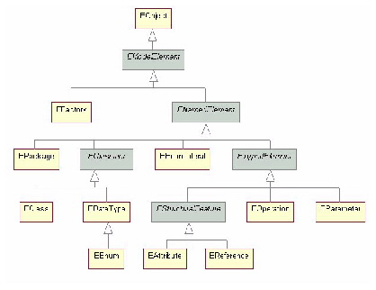
FIGURE 11. Ecore Model Class Hierarchy
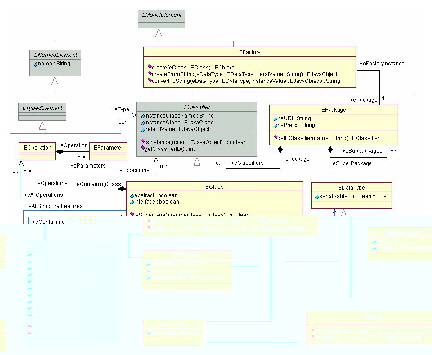
FIGURE 12. Ecore Model Relationships, Attributes, and
Operations
4.02 Appendix B - Footnotes |
top | toc | tof | tot |
1. For a single-valued attribute of type boolean, an is() method is generated instead of a get() method.
2. Specified on the ecore:Package element in the ecore document
3. This is the Java package that is specified on the package statement of the interfaces and/or classes contained in the package.
4. This property is specified on the eCore page of the specification dialog for the UML Package.
5. This field is a member of the interface that corresponds to the package itself.
6. Subpackages cannot be specified if you use Java interfaces to specify your model.
7. Specified on the subPackages element in the genmodel document.
8. Depending on the properties of the attribute or reference, the accessor methods may be get(), set(), isSet() and unset(). Usually, the implementations of these methods are generated automatically.
9. Specified on the EClassifiers element that has an xsi:type of ecore:EClass in the ecore document
10. You do not specify the instanceClass property explicitly. The value is always the generated interface.
11. You do not specify the default value property explicitly. The value is always null.
12. This property is set in Rational Rose using the "Abstract" checkbox on the "Details" page of the "Specification" dialog for a class.
13. The property is specified via the @model tag that precedes the interface statement for the class.
14. If there is potential ambiguity with a get() method, you need to specify the "parameters=" attribute to give signature of the method.
15. Specified on an EClassifiers element that has an xsi:type of ecore:EEnum in the ecore document
16. You do not specify the instanceClass property explicitly. The value is always the generated class.
17. You do not specify the default value property explicitly. The value is always the first entry on the eLiterals list.
18. You do not specify the serializable property explicitly for enumerations. The value of the this property is always true.
19. The @model tag may have a name= argument, but should not have any other arguments.
20. Specified on an EClassifiers element that has an xsi:type of ecore:EDataType in the ecore document
21. This property is specified via the @model tag that precedes the get() method that defines the datatype.
22. You do not specify the default value property explicitly. For java primitive types, the value is the appropriate Java default for the primitive; Otherwise it is null.
23. This property is set in Rational Rose using the "Abstract" checkbox on the "Details" page of the "Specification" dialog for a class.
24. Specified on an eAttributes element in the ecore document
25. This property is specified on the eCore page of the specification dialog for the UML Attribute
26. This property is specified via the @model tag that precedes the get() method that defines the get() method that defines the attribute.
27. The cardinality stereotype is specified as <<lowerBound..upperBound>> where lowerBound is either 0 or 1 and upperBound is either 1 or *. If the cardinality stereotype is omitted, <<0..1>> is assumed.
28. A return type of java.util.List or org.eclipse.emf.common.util.EList indicates an upperBound of "-1" (which means there is no upper bound.) Any other type indicates an upperBound of "1".
29. You do not specify the many property explicitly. The value is derived from the upperBound.
30. You do not specify the required property explicitly. The value is derived from the lowerBound.
31. Specified on an eReferences element in the ecore document
32. This property is specified on either the eCoreA or the eCoreB page of the specification dialog for the UML Association
33. This property is specified via the @model tag that precedes the get() method that defines the get() method that defines the reference.
34. The cardinality is specified as lowerBound..upperBound where lowerBound is either 0 or 1 and upperBound is either 1 or *. If the cardinality is omitted, 0..* is assumed.
35. A return type of java.util.List or org.eclipse.emf.common.util.EList indicates an upperBound of "-1" (which means there is no upper bound.) Any other type indicates an upperBound of "1".
36. You do not specify the many property explicitly. The value is derived from the upperBound.
37. You do not specify the required property explicitly. The value is derived from the lowerBound.
38. Specified on an eLiterals element in the ecore document
39. This property is specified via the @model tag that precedes the field that defines the datatype.
40. You do not set the instance property explicitly. This property is automatically filled in when the package to which the Enumeration belongs is initialized.
41. Specified on an eOperations element in the ecore document
42. Specified on an eParameters element in the ecore document